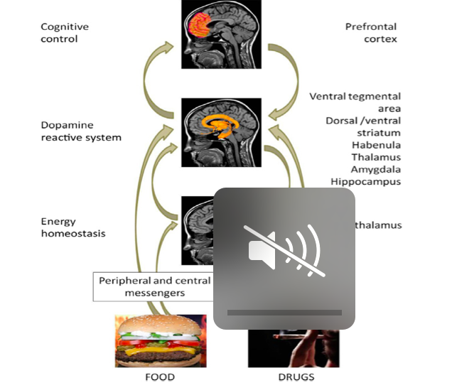
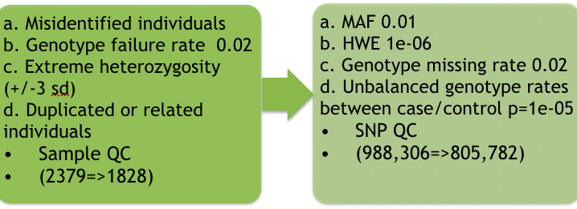
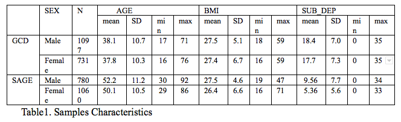

Team Members.
Dan Zhao (danzhao3117@gmail.com) and Jiawei Zhang (jwzhanggy@gmail.com)
Project Abstract
To examine the shared genetic risk variants of obesity and substance dependence, a genome-wide data of 1829 individuals was used. The single locus association analysis and mixed effect linear model were applied, the top significant SNP for obesity located in FTO gene, and the top significant SNP for substance dependence located in the OPRM1 gene. Then, the univariate and bivariate methods was conducted to estimate the heritability and genetic correlation. The heritability for obesity and substance dependence is 0.26 and 0.22 respectively. But in this dataset, there is no significant evidence of genetic correlation. Finally, the central nervous system annotation data and pleiotropy information was integrated to prioritizing GWAS results.
Dataset-1: GCD
The GCD samples include 2379 European Americans. All subjects were recruited for studies of the genetics of drug dependence or alcohol dependence. The sample consisted of small nuclear families originally collected for linkage studies, and unrelated individuals. Subjects were recruited at five US clinical sites: Yale University School of Medicine (APT Foundation, New Haven, CT, USA), the University of Connecticut Health Center (Farmington, CT, USA), the University of Pennsylvania Perelman School of Medicine (Philadelphia, PA, USA), the Medical University of South Carolina (Charleston, SC, USA) and McLean Hospital (Belmont, MA, USA). 14All subjects were interviewed using an electronic version of the semi-structured assessment for Drug Dependence and alcoholism (SSADDA)15 to derive diagnoses for major psychiatric traits according to DSM-IV (Diagnostic and Statistical Manual of Mental Disorders, 4th edition) criteria.
Dataset-2: SAGE
Another dataset included is the SAGE data (dbGaP study accession phs000092.v1.p1). In this study, case subjects were identified as having a lifetime history of alcohol dependence using DSM-IV criteria. Control subjects were required to report a history of drinking because alcohol use is required to develop alcohol dependence. Control subjects had no significant alcohol-dependence symptoms. Because of the genetic overlap between alcohol and drug dependence, a diagnosis of drug dependence was an exclusionary criterion for control subjects. The data recruited families with multiple members as well as unrelated individuals of European descent. The subjects came from 9 different sites across the U.S.
Genotyping and Quality Control
Samples for GCD were genotyped on the Illumina HumanOmni1-Quad v1.0 microarray containing 988,306 autosomal SNPs. The samples in SAGE study were genotyped on the Illumina Human1M containing 1040107 SNPs.
Sample quality control including removing related individuals, misidentified individuals, as well as individuals with genotype failure rate of 0.02. After sample quality control, the number of GCD samples reduced from 2379 to 1828, the number of SAGE samples reduced from 2668 to 1840. ( Table 1.).
For SNP quality control, SNPs with allele frequency > 1% were analyzed. A SNP call rate of 98% was required. Hardy–Weinberg equilibrium (HWE) was tested, and SNPs that deviated from HWE (P < 10−6) were excluded. After SNP quality control, the SNP number in GCD samples is 805782; the SNP number in SAGE samples is 845871.